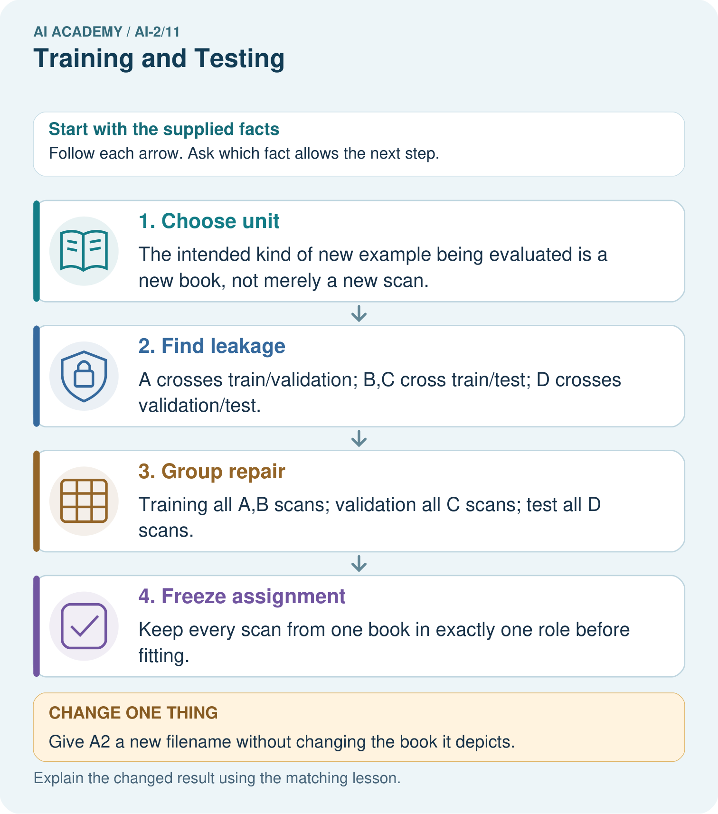
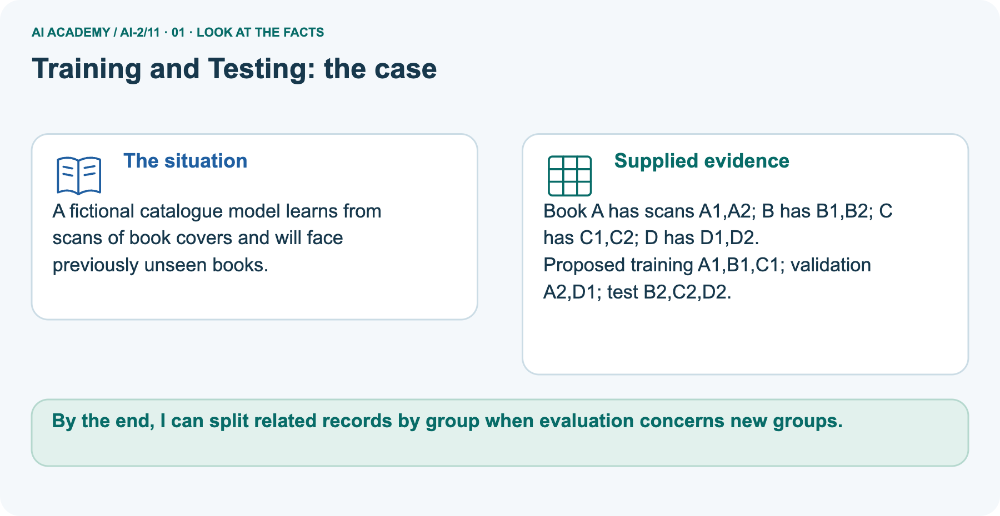
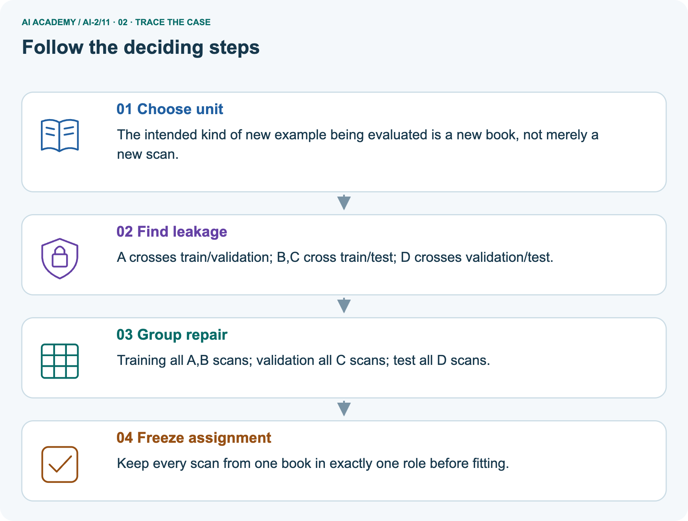
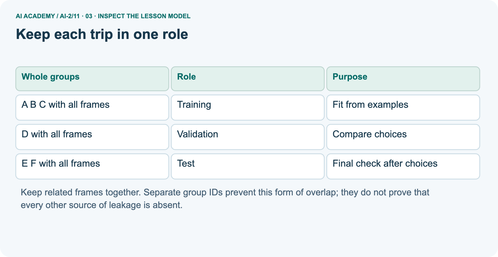
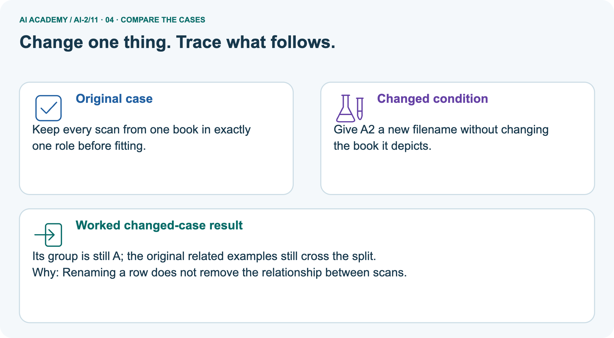
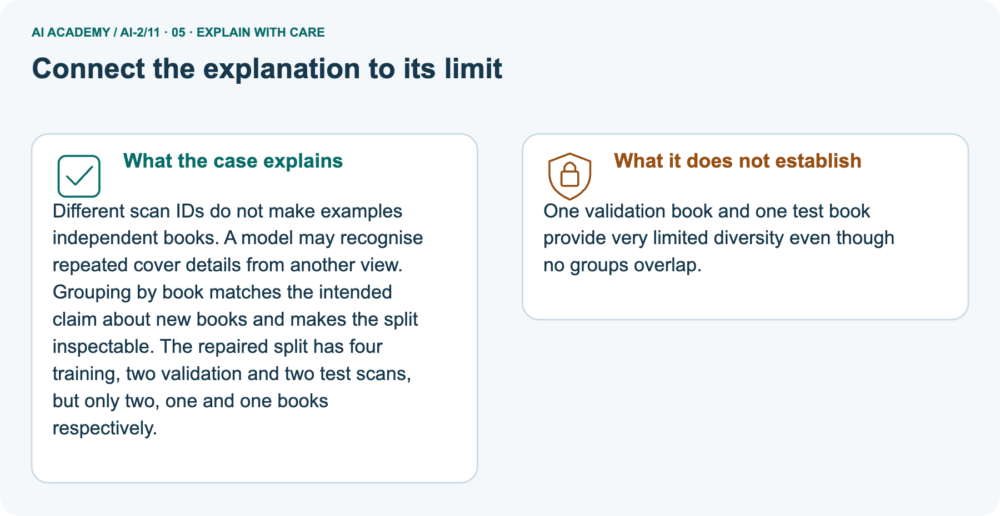
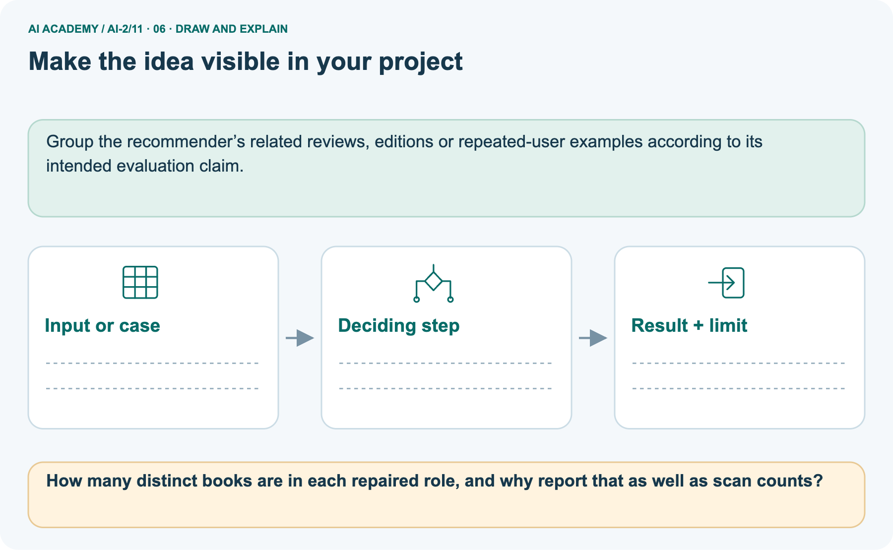

AI Academy · Level 2 · Grade 7 · Week 11 · Teacher guide
Training and Testing
Learn to understand, design, build, test and explain AI systems responsibly.
Project: Transparent Book Recommender
Teacher guide · 1 of 9
Training and Testing
Prepare Training and Testing: check the target, prerequisites, resources and adaptable teaching schedule.
Teach the learning cycle
Primary target: Choose a split unit that matches the intended prediction claim
| Session | Sequence and minutes | Resources |
|---|---|---|
| Session 1 · Understand · 45 min | 0–7: recall and prerequisite; 7–15: inspect the concrete case and predict; 15–30: teacher models the worked trace; 30–40: learners explain a step using the text and visual; 40–45: check the core idea. | Use Your mission, Notice the evidence, See how it works, Compare the cases, Words that unlock the idea and Follow a worked example; record the brief recall in the workbook. |
| Session 2 · Practise · 45 min | 0–5: retrieve the procedure; 5–15: W2 completion practice; 15–23: explain and check with a partner; 23–30: each learner answers the misconception check; 30–40: targeted reteaching or a harder variation; 40–45: prepare the investigation. | Use Find and repair a mistake, Practise together, Run the investigation and Build your understanding; use the matching workbook W2 and misconception check. |
| Session 3 · Investigate and transfer · 45 min | 0–5: retrieve the decision rule; 5–20: investigate or trace; 20–30: start the independent case; 30–38: connect the project; 38–43: act on feedback; 43–45: plan the return check. | Use Run the investigation, Connect your project, Show what you know, Study a complete case and Try a new case independently. Allow extra time for the full task set. Use a coding lab only when this week actually provides one; Your lesson route is the planning section. |
This is a starting allocation of 135 minutes, not a validated duration. Preserve all named topics. Schedule extra time for connected examples, the full investigation, independent cases and project building.
Repeated copies of a case share one recorded attempt; they are not new evidence.
Case exposure check: this source example appears in ai-2/11, ai-4/8. Reuse a familiar case for recall or modelling; verify that the case used to assess transfer has not already received feedback.
Retrieval answer guidance
Human Classifier Simulation
Without opening the old lesson, explain one key idea from Human Classifier Simulation. Give an example and a mistake that the idea helps you avoid.
Look for: Construct a classifier with a stated input format, selected rule and recorded output
Reference example, not the only acceptable wording: Require a present height, unit cm, a whole number and range 1 through 10 inclusive.
For example, 7 cm is accepted; blank is missing, 60 mm has the wrong unit and 11 cm is outside the range. Fractional values such as 4.5 cm also fail.
The contract defines accepted inputs; it does not list only the fitting records or establish prediction correctness.
Operational Labels
Without opening the old lesson, explain one key idea from Operational Labels. Give an example and a mistake that the idea helps you avoid.
Look for: Apply a category definition using explicit evidence and boundary rules
Reference example, not the only acceptable wording: In order: ready because both known fields pass; revise because 31 exceeds 30; review because the known day passes but the room is unknown; revise because the known day failure has priority over the unknown room.
Equality at 30 is accepted.
Loops and Stopping
Without opening the old lesson, explain one key idea from Loops and Stopping. Give an example and a mistake that the idea helps you avoid.
Look for: Trace variable values before and after each loop iteration
Reference example, not the only acceptable wording: 2, 3 and 4; the stop value is excluded. The body runs three times.
Use the student module and workbook section with this exact week title. The worked case, independent question and answers below form one aligned lesson sequence.
What the learner must demonstrate
A team tests five rule versions on the same ten books and chooses the highest score. It calls the final score an unbiased unseen test result. Explain the issue and revise the evaluation plan.
Concept to explain
The test set estimates performance on unseen cases.
| Term | Meaning |
|---|---|
| training set | Examples used to adjust a model's parameters or fit learned preprocessing. |
| test set | Data reserved for evaluating a selected system; final test data must not influence its development. |
| unseen | Not previously used for the development, practice or selection being evaluated. |
| leakage | Use of information during development or prediction that should be unavailable for a fair evaluation of the intended task. |
Prepare the class
Use the supplied scenario, student illustrations and blank paper. For numeric work, offer counters or a calculator after learners show the setup. Fictional records are supplied; personal data and paid accounts are unnecessary.
Alternative compact allocation
This compact option is not the full-week schedule. Use the main teaching cycle and allow extra sessions for the investigation, independent work and project.
Allow 80 minutes: recall 8; explanation 12; worked demonstration 15; guided practice 20; independent assessment 15; project and reflection 10. Extend the lab into a second session when needed.
Preparation for the connected explanation
Teach two 45-minute sessions with fictional frame cards. Focus on the evaluation goal and unit of separation before percentages. The worked plan separates trips for an intended new-trip claim on a familiar route.
It neither trains a model nor establishes performance. Distinguish frames, groups and sets, and retain Week 5 label-rule and review records.
Readiness answer
They can share the same mistake or use an unclear rule. Agreement counts matching labels; correctness requires checking the rule and evidence.
Printed lesson and workbook
Twelve frame cards A1 A2 A3 B1 B2 C1 D1 D2 E1 E2 F1 F2
Three trays or paper areas named training validation and test
Optional Python 3 editor with no extra packages
End goal for the pictorial case
By the end, I can split related records by group when evaluation concerns new groups.
This added worked case illustrates the week’s main idea. Retain all original and connected topics; schedule its practice within the teaching cycle.
Teacher guide · 2 of 9
Explain the mechanism
Model Training and Testing using the supplied case, labelled mechanism and reasoning. Make the scope of each conclusion explicit.
Input → Process → Output
Trace the information. At each stage, ask what changed and how you could test it.
Which stage could fail even when the other two are correct? Explain:
Predict first. Then check each step. A correct answer without visible reasoning is incomplete evidence.
1. 20 cards: seal 5 as test cases first.
2. Design the rule using only the remaining 15.
3. Freeze the rule before opening the test cards.
4. If a test label guided a change, it is no longer a fair final test.
Recalculate, retrace, or restate the reasoning in your own representation:
CHECK Did the evidence answer the exact question? Did the total, path, or source record stay consistent?
Concrete teaching case
The teaching case
A rule is developed and evaluated using the same books A–H.
Why does this not establish unseen performance?
Exact explanation to model
Why the result follows
Those cases influenced the rule. Reserve different labelled books that do not influence construction or revision.
Explain the added worked example
Explain the added worked example · 1
A model may seem successful when its test examples closely resemble examples it already learned from. Imagine several pictures taken seconds apart during one robot trip.
They have different picture IDs but share a route, lighting and objects. This week you will assign entire trips to separate sets and explain what the resulting evaluation could measure. No model is fitted in this lesson.
Explain the added worked example · 2
Our invented twelve-row dataset contains frame descriptions from six trips. Each row is one frame; the group is its trip ID. The proposed claim concerns new trips on the same practice route under similar conditions.
We therefore keep all frames from a trip in one set. To claim success on new routes, grouping only by trip would not be enough.
This small fictional assignment is for learning split design, not evidence of real performance. Each frame belongs to one group and one set.
Store frame and trip IDs as metadata for auditing; do not assume an ID is an appropriate prediction input.
Explain the added worked example · 3
Training data fits the model. Validation data helps compare choices such as candidate rules. Keep the test set for a final check after those choices are fixed.
A learner who repeatedly changes the model after seeing test results has used that set for development; its score is no longer an untouched final check.
The first line of output is []: no trip ID is shared between any pair of sets. The second is 3 1 2: training, validation and test contain three, one and two trip groups. The symbol & finds shared values and | combines sets.
These are group counts, not frame counts.
This audit assumes the lists correctly describe every frame assignment. It cannot find an omitted frame, a wrong trip ID, a copied image with a different ID or a feature containing the answer.
Check the assignment table and source records too.
Key terms
| Term | Meaning |
|---|---|
| Training set | Examples used to fit a model |
| Validation set | Separate examples used to compare choices during development |
| Test set | Held out examples used for final evaluation after choices are fixed |
| Group | Related examples that must stay together for a stated evaluation goal |
Model the reasoning aloud
Use the complete worked example below before asking learners to complete W2. Reveal a small part, invite a prediction, then explain the deciding step.
These teacher notes contain solutions; do not reveal the independent case answer during modelling.
Model the reasoning aloud · 4
Suppose A1 and A2 are in training while A3 is in test. The frame IDs differ, but A appears in both sets. Shuffling the rows does not remove this relationship.
For our new-trip claim, move all A frames to one chosen role and record the revised assignment before evaluating a model. Do not copy A3 into both roles.
Model the reasoning aloud · 5
Audit that every source frame occurs exactly once, no group crosses roles and the assigned counts sum to the source count. In our worked plan the row counts are six training, two validation and four test: twelve total.
A fixed random seed can reproduce a random split, but it cannot make a flawed grouping choice fair.
Model the reasoning aloud · 6
A split record names the prediction goal, source version, group definition, exact assignments, row and group counts, date and any random method or seed used.
For this hand-assigned example, record that there was no random sampling. Keep label-rule versions and unresolved review statuses traceable as in Week 5.
| Thinking move | Teacher prompt |
|---|---|
| Plan | What is given? What is the question? Which procedure fits these facts? |
| Do | Point to each input and intermediate step in the worked trace. Name the rule that allows the next step. |
| Check | Does the output answer the question? Which assumption or limitation prevents a larger claim? |
Use the diagram and verbal explanation together. Ask learners to match a sentence to a specific visual step; do not assign learners fixed visual or auditory learning styles.
A pictorial worked case: Training and Testing
A fictional catalogue model learns from scans of book covers and will face previously unseen books.
The facts we will use
Supplied facts
Book A has scans A1,A2; B has B1,B2; C has C1,C2; D has D1,D2.
Supplied facts
Proposed training A1,B1,C1; validation A2,D1; test B2,C2,D2.

Read the picture one step at a time
Why this result follows
Why the result follows
Different scan IDs do not make examples independent books. A model may recognise repeated cover details from another view. Grouping by book matches the intended claim about new books and makes the split inspectable.
The repaired split has four training, two validation and two test scans, but only two, one and one books respectively.
What this example does not establish
Keep the stated limit
One validation book and one test book provide very limited diversity even though no groups overlap.
Change one thing in the pictured case
Change one thing
Change: Give A2 a new filename without changing the book it depicts.
Predicted result
Prediction: Its group is still A; the original related examples still cross the split.
Why the result follows
Reason: Renaming a row does not remove the relationship between scans.
Ask while showing the picture
Ask while showing the picture · 7
Cover the result. Ask learners to name the inputs and predict the next step. Uncover one step, connect the icon to the actual procedure, and explain its evidence. Then change the supplied condition and compare.
The picture is a representation; it does not document execution of a real AI model.
Teacher guide · 3 of 9
Demonstrate and guide practice
Demonstrate Training and Testing, reduce support deliberately and check individual reasoning before discussing answers.
Board sequence
1. Put the facts on the board
Write the given facts: A rule is developed and evaluated using the same books A–H.
2. State the decision to explain
Write the question to explain: Why does this not establish unseen performance?
3. Reveal the worked reasoning
Reveal after predictions: Those cases influenced the rule. Reserve different labelled books that do not influence construction or revision.
Hold back the independent task
Keep for an independent attempt: You tune a rule using cards 1 to 8 and test it on cards 9 and 10. After seeing card 9's error you change the rule. Is card 9 still untouched test evidence?
Classroom dialogue
Ask the class
Ask: Which facts are given, and which would we have to assume? Learners mark relevant details before discussing answers.
Language to model
Say: Predict first. Show the rule, information path or calculation that would produce the result. A correct guess is not yet an explanation.
Reveal reasoning one step at a time. Explain why a tempting alternative fails. Write units and denominators for arithmetic, trace conditions for decisions, and identify supporting sources for claims.
In pairs, one learner solves while the other checks evidence; exchange roles. Remove the worked answer before independent assessment.
Model these guided questions
Guided: the row counts become 7 training, 1 validation and 4 test. D is shared by training and validation because D1 and D2 are related frames from one trip. Unique frame IDs and a seed do not remove the shared trip.
Return D2 to validation to recover the worked plan. Exit: separate trip IDs on one route do not test unseen routes.
Hold out whole routes with all their trips, and collect enough routes and relevant conditions for the intended evaluation.
Case-specific teaching sequence
| Stage | Teacher action |
|---|---|
| Session 1 start to 7 minutes | Retrieve why matching labels can share an error. State the new-trip evaluation goal and define one row and one group. |
| 7 to 18 minutes | Use the frame cards to build the worked split. Count rows and groups separately and explain the three roles. |
| 18 to 32 minutes | Trace the intersection audit. Complete W1 and W2; ask which metadata problems an empty overlap list could miss. |
| 32 to 45 minutes | Move D2 into training and complete the guided question. Repair it by moving it back, then record the before and after counts. |
| Session 2 start to 8 minutes | Retrieve why shuffling and fixed seeds do not remove relationships. Ask what must stay together for a new-route claim. |
| 8 to 20 minutes | Complete W3 and discuss group-based, route-based and time-respecting evaluation goals. Explain why percentages cannot decide the goal. |
| 20 to 35 minutes | Collect W4 independently before hints. Require all three overlap checks, exact repaired frame lists and both count units. |
| 35 to 45 minutes | Discuss W5 and the exit question. Use the fresh retry after support and record what help was needed. |
Reduce help deliberately
Completion practice
Completion task: For the worked A through F plan, give training, validation and test counts first in groups and then in rows. Interpret [] from the code and state one problem it cannot detect.
Reasoning to listen for
Teacher check: Group counts are 3,1,2; row counts are 6,2,4. The empty list means no trip ID overlaps between any pair of the listed sets.
The code cannot detect wrong metadata, an omitted frame, a disguised duplicate or an outcome feature.
Start by identifying the given inputs together. Leave the intermediate steps blank. If needed, model one step, then withdraw that help on the next step. Move to a full trace only when the partial trace is understood.
For partners, alternate explainer and checker; collect a response from every learner before discussion.
Individual reasoning check
Use the worked case for Splits and related examples. Proposed explanation: “Different row IDs mean independent examples”. Decide whether this explanation is supported.
Point to the step or supplied fact that decides; explain your repair if needed.
Expected repair
Expected correction: Different frames may share a trip or source. Choose group metadata based on the claim and verify it against the source.
Collect explanations, not only yes/no votes. If a misunderstanding is common, re-model the relevant step for the class.
If it affects a few learners, give a short targeted group explanation while others solve a more demanding variation.
Pictorial practice question
How many distinct books are in each repaired role, and why report that as well as scan counts?
Reasoned teacher answer
Training 2, validation 1, test 1. Scan counts alone exaggerate the number of distinct books evaluated.
Changed-case reasoning: Its group is still A; the original related examples still cross the split. Renaming a row does not remove the relationship between scans.
Collect each learner’s explanation before discussion. Use the first missing connection between input, deciding step and result to choose support. This question is worked-case practice, not fresh mastery evidence.
Teacher guide · 4 of 9
Run the weekly evidence lab
Run the Training and Testing investigation and use the first unsupported step to choose a teaching response.
Words You Can Use to Reason
A definition matters when you can recognize the idea, use it, and contrast it with a near-miss.
Predict → Test → Record → Explain
Keep expected and actual results separate. Surprises are useful data when recorded honestly.
Split cards before rule-making. Record the split, build on training only, freeze the rule, then reveal and score the test pile once.
What did the hardest test teach you that the normal test did not?
Make the lab runnable
Use the concrete case as the shared normal case and the independent question as a second case. Each pair creates a boundary or missing-information case and predicts its result before testing.
Keep the expected result separate from an observed mistake.
| Record | What to capture |
|---|---|
| Input or evidence | Exact data, instruction or claim |
| Expected result | Answer or safe fallback declared before the run |
| Observed result | Actual result, including errors |
| Explanation | Rule, calculation or evidence explaining the outcome |
| Next test | One justified change and a new prediction |
Diagnose and reteach
For guessing, return to given facts and request a trace. For vocabulary without application, use one example and one non-example. For arithmetic errors, check the setup before the calculation.
Finish with a different uncoached case before recording mastery.
Address these additional misconceptions
Different row IDs mean independent examples: Different frames may share a trip or source. Choose group metadata based on the claim and verify it against the source.
A fixed percentage guarantees a fair test: Percentages do not remove overlap or ensure enough groups and relevant cases. The goal and dependencies determine the split.
An empty overlap list proves there is no leakage: The audit checks listed group IDs only. Wrong metadata, copied content, outcome features or preprocessing fitted on all sets can still invalidate evaluation.
Match the support to the first error
| What the response shows | Next teaching action |
|---|---|
| Missing or misread facts | Read the case aloud, mark supplied versus unknown facts, and let the learner restate it. |
| Wrong procedure | Return to the deciding step in the worked case. Contrast it with the proposed incorrect explanation. |
| Arithmetic or implementation error | Trace intermediate values or lines; preserve the first mismatch and retry that step. |
| Correct result without a reason | Ask for a trace and a changed case before marking independent understanding. |
| An unsupported wider claim | Ask which supplied evidence supports the claim and which further observation would be needed. |
Offer an oral explanation, drawing, enlarged visual or fewer examples when that removes a reading/writing barrier. Keep the same reasoning goal.
Stretch secure learners by changing a boundary or assumption and asking them to defend the effect, not simply by assigning more of the same questions.
Teacher guide · 5 of 9
Assess and explain the answers
Use the Training and Testing questions, teacher keys and criteria after the relevant attempts. Previously discussed cases are practice; protect the separately selected independent task.
Worked case answer
Teacher key · Worked case answer
Those cases influenced the rule. Reserve different labelled books that do not influence construction or revision.
Independent question
Independent question · withhold the key
You tune a rule using cards 1 to 8 and test it on cards 9 and 10. After seeing card 9's error you change the rule. Is card 9 still untouched test evidence?
Expected independent answer
Teacher key · Expected independent answer
No. Its result influenced development. Use a separate untouched test after tuning; keep the earlier failure in the development record.
What counts as evidence
| Criterion | 0 points | 1 point | 2 points |
|---|---|---|---|
| Result | Incorrect or absent | Partly correct | Correct with necessary conditions |
| Reasoning | No supporting trace | Some steps | Clear mechanism, calculation or source support |
| Limit | Overclaims certainty | Vague limitation | Relevant uncertainty or missing fact |
| Transfer | Copies without adapting | Adapts with prompts | Solves a changed case independently |
Use 6/8 as a classroom checkpoint, with 2 required for both Result and Reasoning. This is a proposed teaching rule, not a validated certification threshold.
Do not count a coached answer as independent mastery; correct unsafe or unsupported claims regardless of total.
Feedback
Ask the learner to find the evidence that challenges this claim: “A file named test can never become development data.” Keep the first attempt and an uncoached retry separate.
Original transfer answer
Teacher key · Original transfer answer
The ten books are validation data because their scores selected the version. Evaluate the chosen rule once on a fresh labelled final set that did not influence any choice.
Disclose small sample size and any related-book overlap.
Explanations for the additional workbook examples
W1 Explain the three roles
Workbook question · W1
Explain what training, validation and test sets are used for. What changes if you repeatedly choose a model using its test score?
Teacher reasoning · W1
Training fits the model; validation compares development choices; test evaluates after choices are fixed. Repeatedly selecting by the test score uses that set for development, so it is no longer an untouched final evaluation.
W2 Distinguish frames from groups
Workbook question · W2
For the worked A through F plan, give training, validation and test counts first in groups and then in rows. Interpret [] from the code and state one problem it cannot detect.
Teacher reasoning · W2
Group counts are 3,1,2; row counts are 6,2,4. The empty list means no trip ID overlaps between any pair of the listed sets. The code cannot detect wrong metadata, an omitted frame, a disguised duplicate or an outcome feature.
W3 Repair a related example leak
Workbook question · W3
A1 and A2 are in training and A3 is in test. Explain why unique frame IDs and a fixed random seed do not fix this. Propose a repair and what to record.
Teacher reasoning · W3
The frames share trip A, so the test contains a trip already represented in training. Unique frame IDs do not remove similarity; a seed only reproduces the assignment.
Put every A frame in one role, keep each frame once and record the revised assignments and counts before model evaluation.
W4 Audit and repair independently
Workbook question · W4
Eight frames come from trips P (P1 P2 P3), Q (Q1 Q2), R (R1), S (S1 S2). A proposed split is training P1 Q1 R1; validation P2 S1; test Q2 P3 S2. Identify shared groups for each pair of sets.
Repair it by assigning P and Q to training, R to validation and S to test. List all frames in each role and give row and group counts. State one limit of the repaired plan.
Teacher reasoning · W4
Training/validation share P; training/test share P and Q; validation/test share P and S. Repaired training is P1 P2 P3 Q1 Q2 (5 rows,2 groups), validation R1 (1 row,1 group), test S1 S2 (2 rows,1 group).
Every frame appears once and groups are disjoint. This tiny plan does not establish reliable performance, correct metadata, label coverage or success on new routes.
W5 Match separation to the claim
Workbook question · W5
A model will be evaluated on new routes. Route North has trips A and B; route South has C and D. A proposed split trains on A and C and tests on B and D. Explain the problem and give a route-based alternative.
Is this enough for a strong performance claim?
Teacher reasoning · W5
Both routes occur in training and test, so the plan does not hold out a new route. For illustration, keep A and B together for training and C and D together for test, or reverse the route roles.
With only two routes there is too little evidence for a strong general claim and no separate route left for validation; obtain more routes for a fuller design.
Assess independent transfer
Independent question · withhold the key
Selected case: Eight frames come from trips P (P1 P2 P3), Q (Q1 Q2), R (R1), S (S1 S2). A proposed split is training P1 Q1 R1; validation P2 S1; test Q2 P3 S2. Identify shared groups for each pair of sets.
Repair it by assigning P and Q to training, R to validation and S to test. List all frames in each role and give row and group counts. State one limit of the repaired plan.
Selected case answer
Teacher key · Selected case answer
Training/validation share P; training/test share P and Q; validation/test share P and S. Repaired training is P1 P2 P3 Q1 Q2 (5 rows,2 groups), validation R1 (1 row,1 group), test S1 S2 (2 rows,1 group).
Every frame appears once and groups are disjoint. This tiny plan does not establish reliable performance, correct metadata, label coverage or success on new routes.
| Dimension | Evidence required |
|---|---|
| Explanation | Names the applicable idea or procedure and ties it to the supplied facts. |
| Trace and result | Preserves the given inputs and shows the relevant intermediate steps; distinguishes a prediction from an observed execution. |
| Limits | States the assumptions, missing evidence or conditions under which the result would change. |
Teacher key · Selected case answer
Record each dimension as not yet, with support, or independent. Accept a valid alternative procedure with a defensible trace.
Do not penalise an honestly recorded model failure if the learner correctly explains its evidence and limits.
Feedback that the learner uses
Name the earliest unsupported step and give one action to repair it. Have the learner make that repair now and explain why. Then assess the relevant skill on a fresh, fully specified case.
Confirm it was not previously practised with feedback; solve and check the new case before assigning it. A follow-up design prompt is a starting brief, not automatically an equivalent test.
Teacher guide · 6 of 9
Connect and extend learning
Connect Training and Testing to Transparent Book Recommender, adapt support and plan a later changed-case check.
Transparent Book Recommender
Keep final user profiles hidden until weights and thresholds are fixed.
Keep the decision, input, result, explanation and remaining limitation in the project evidence record. Retrieve this record next week rather than restarting the project.
Support and stretch
Trace one record or condition at a time with counters and labelled columns. Stretch: introduce a tie, boundary or missing field and declare its handling policy before rerunning.
Exit reflection
Ask for one decision the learner can now justify and one situation requiring more evidence or human review. Confidence ratings are separate from correct independent performance.
Bridge to the next week
Next: Week 12: Accuracy as a Fraction. Retrieve today’s evidence and identify what carries forward and what is new.
Support and fresh reassessment
Keep a coloured border shared by cards from the same trip. Supply blank assignment tables without the correct roles.
Extension: explain why a new-route evaluation with many frames but only two routes has limited evidence and cannot obtain three nonempty disjoint route sets.
Require W4 overlaps P; P and Q; P and S, in pair order, then exact repaired lists with rows 5,1,2 and groups 2,1,1. Fresh retry: U1 U2 belong to U, V1 to V, W1 W2 to W.
Proposed training U1 V1, validation W1, test U2 W2 has shared U between training/test and W between validation/test; training/validation share none.
Repair to all U in training, V in validation and all W in test: rows 2,1,2 and groups 1,1,1. Require an explicit small-sample limitation.
Week 7 introduces a baseline before a model. Carry forward the split record and keep the final test protected while comparing choices.
Teacher reference: scikit-learn cross-validation documentation, grouped data section, https://scikit-learn.org/stable/modules/cross_validation.html (reviewed 2026-09-27).
Plan the delayed return
Suggested return points in this level: ai-2/12, ai-2/14, ai-2/17. Use actual classroom dates, adjusting for holidays and gaps. One, three and six teaching weeks are scheduling choices, not a claimed optimal spacing.
At a delayed check, ask for the idea from memory and a changed application. Compare with the earlier independent response and record support used.
For a new level, revisit the previous capstone before checking the new prerequisites.
| Record | Teacher evidence |
|---|---|
| Learner code and date | |
| Concept and case used; prior exposure | |
| Explanation / trace / limits | |
| Support and first repair | |
| Changed case and delayed outcome | |
| Next teaching action |
Use the evidence to choose reteaching or the next step. A completed page, confidence rating or attractive project does not by itself demonstrate understanding.
Project evidence from this case
Group the recommender’s related reviews, editions or repeated-user examples according to its intended evaluation claim.
Teacher guide · 7 of 9
Prepare, teach and assess
Use this preparation summary alongside the detailed Training and Testing lesson; it is a checklist rather than a replacement for the full sequence.
Teaching target
Teaching target: Choose a split unit that matches the intended prediction claim
Prepare the labelled worked-case picture, the matching workbook, fictional input cards and a place for individual responses. No paid AI account is required for the paper reasoning activities.
| Session | Plan | Resources |
|---|---|---|
| Session 1 · Understand · 45 min | 0–7: recall and prerequisite; 7–15: inspect the concrete case and predict; 15–30: teacher models the worked trace; 30–40: learners explain a step using the text and visual; 40–45: check the core idea. | Use Your mission, Notice the evidence, See how it works, Compare the cases, Words that unlock the idea and Follow a worked example; record the brief recall in the workbook. |
| Session 2 · Practise · 45 min | 0–5: retrieve the procedure; 5–15: W2 completion practice; 15–23: explain and check with a partner; 23–30: each learner answers the misconception check; 30–40: targeted reteaching or a harder variation; 40–45: prepare the investigation. | Use Find and repair a mistake, Practise together, Run the investigation and Build your understanding; use the matching workbook W2 and misconception check. |
| Session 3 · Investigate and transfer · 45 min | 0–5: retrieve the decision rule; 5–20: investigate or trace; 20–30: start the independent case; 30–38: connect the project; 38–43: act on feedback; 43–45: plan the return check. | Use Run the investigation, Connect your project, Show what you know, Study a complete case and Try a new case independently. Allow extra time for the full task set. Use a coding lab only when this week actually provides one; Your lesson route is the planning section. |
Before class, solve the supported practice: For the worked A through F plan, give training, validation and test counts first in groups and then in rows. Interpret [] from the code and state one problem it cannot detect.
Supported practice answer
Reasoned practice answer: Group counts are 3,1,2; row counts are 6,2,4. The empty list means no trip ID overlaps between any pair of the listed sets.
The code cannot detect wrong metadata, an omitted frame, a disguised duplicate or an outcome feature.
Check every learner before discussion: Use the worked case for Splits and related examples. Proposed explanation: “Different row IDs mean independent examples”. Decide whether this explanation is supported.
Point to the step or supplied fact that decides; explain your repair if needed.
Repair the misconception
Misconception repair: Different frames may share a trip or source. Choose group metadata based on the claim and verify it against the source.
Support without giving away the answer
Support: read the exact case aloud, enlarge the labelled picture, supply input cards and model only the first deciding step. Accept a spoken explanation or drawing; retain the reasoning goal.
Extend the reasoning
Extension: Give A2 a new filename without changing the book it depicts. Require a prediction and a reason before comparing. Expected result: Its group is still A; the original related examples still cross the split.
Reason: Renaming a row does not remove the relationship between scans.
Protect the independent attempt
Independent assessment: withhold the reserved answer until the learner has attempted the new case. Record support separately from correctness.
| Criterion | Not yet | With support | Independent |
|---|---|---|---|
| Explanation | Names an answer without a deciding fact | Uses a hint to link fact and decision | Explains the deciding fact in own words |
| Trace or test | Cannot connect input and result | Completes steps with prompts | Traces or tests a changed case accurately |
| Limits and revision | Claims more than evidence supports | Names a limit after a prompt | States a defensible limit and useful next test |
Project checkpoint
Project checkpoint: Make a transparent first version. Keep a trace of how one input becomes an output; explain the rule or learned component.
Use the weekly teacher answer for topic-specific reasoning. A saved progress tick is an activity record; judge mastery from the learner’s explanation and evidence.
Teacher guide · 8 of 9
Use feedback, labs and repair paths
Use feedback, earlier review and portfolios purposefully. Apply the coding routine only when this lesson has an executable lab.
Use the two formative questions as supported practice, not as independent mastery scores. Discuss the deciding evidence rather than accepting a guessed selection.
The feedback comes from the reviewed public worked case. Do not reveal the separately reserved independent teacher answer until the learner has attempted that case.
Ask students to predict before running code. Preserve errors and actual outputs; collect a changed test and an explanation. The branch-boundary and indexing lessons deliberately include failure cases.
Use the earlier worked-explanation links to address a specific missing building block, then return to the current question. Adapt this suggestion after observing the learner; it is not an automatic diagnosis.
Collect the completed-work portfolio as evidence. Record support separately from correctness, and assess explanation, trace/test and limitations. Progress ticks and quiz selections alone do not establish mastery.
Teacher guide · 9 of 9
Visual concept journey
Show one Training and Testing graphic at a time, request a prediction and discuss its trace before the independent assessment.
Use one picture at a time. Hide a worked result before asking for a prediction, then reveal it for feedback. These are supported teaching cases; retain the separate independent assessment for a fresh first attempt.
01. Training and Testing: the case

A fictional catalogue model learns from scans of book covers and will face previously unseen books. Supplied facts: Book A has scans A1,A2; B has B1,B2; C has C1,C2; D has D1,D2.
Proposed training A1,B1,C1; validation A2,D1; test B2,C2,D2.
Point to the given fact that matters most. Explain why it matters.
Discuss while showing the picture
Teacher prompt: Point to the given fact that matters most. Explain why it matters. Ask learners to describe one label or arrow in ordinary words. Use the adjacent transcript if the image is difficult to see.
02. Follow the deciding steps

Choose unit: The intended kind of new example being evaluated is a new book, not merely a new scan. → Find leakage: A crosses train/validation; B,C cross train/test; D crosses validation/test. → Group repair: Training all A,B scans; validation all C scans; test all D scans. → Freeze assignment: Keep every scan from one book in exactly one role before fitting.
Point to each numbered stage and explain which recorded input it uses.
Discuss while showing the picture
Teacher prompt: Point to each numbered stage and explain which recorded input it uses. Ask learners to describe one label or arrow in ordinary words. Use the adjacent transcript if the image is difficult to see.
03. Keep each trip in one role

Keep each trip in one role. A B C with all frames | Training | Fit from examples. D with all frames | Validation | Compare choices. E F with all frames | Test | Final check after choices
Read the labels and values. Explain the relationship the model shows.
Discuss while showing the picture
Teacher prompt: Read the labels and values. Explain the relationship the model shows. Ask learners to describe one label or arrow in ordinary words. Use the adjacent transcript if the image is difficult to see.
04. Change one thing. Trace what follows.

Original case: Keep every scan from one book in exactly one role before fitting. Changed condition: Give A2 a new filename without changing the book it depicts.
Expected result: Its group is still A; the original related examples still cross the split. Reason: Renaming a row does not remove the relationship between scans.
Predict before checking the worked changed-case result. Name what changed and what the supplied facts allow you to conclude.
Discuss while showing the picture
Teacher prompt: Predict before checking the worked changed-case result. Name what changed and what the supplied facts allow you to conclude. Ask learners to describe one label or arrow in ordinary words.
Use the adjacent transcript if the image is difficult to see. Changed-case reasoning: Renaming a row does not remove the relationship between scans.
05. Connect the explanation to its limit

Different scan IDs do not make examples independent books. A model may recognise repeated cover details from another view. Grouping by book matches the intended claim about new books and makes the split inspectable.
The repaired split has four training, two validation and two test scans, but only two, one and one books respectively. Limit: One validation book and one test book provide very limited diversity even though no groups overlap.
Explain the case, then point to a limit on the claim.
Discuss while showing the picture
Teacher prompt: Explain the case, then point to a limit on the claim. Ask learners to describe one label or arrow in ordinary words. Use the adjacent transcript if the image is difficult to see.
Keep the stated scope: One validation book and one test book provide very limited diversity even though no groups overlap.
06. Make the idea visible in your project

Group the recommender’s related reviews, editions or repeated-user examples according to its intended evaluation claim. Draw your input, deciding step, result and limit.
Supported question: How many distinct books are in each repaired role, and why report that as well as scan counts?
Draw your project trace and justify the deciding step using evidence.
Discuss while showing the picture
Teacher prompt: Draw your project trace and justify the deciding step using evidence. Ask learners to describe one label or arrow in ordinary words. Use the adjacent transcript if the image is difficult to see.
Supported practice key: Training 2, validation 1, test 1. Scan counts alone exaggerate the number of distinct books evaluated.